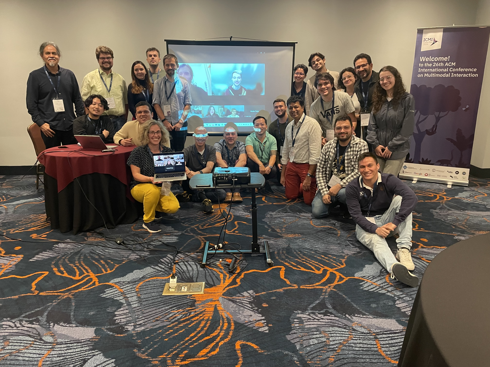

Outreach & Community
International Conference on Social Robotics + AI (ICSR) 2025
This event brought together leading experts, researchers, and professionals from around the world to discuss the latest advancements in “Social Robotics and Artificial Intelligence”. The conference theme, "Emotivation at the Core: Empowering Social Robots to Inspire and Connect," highlighted the essential role of “Emotivation” in social robotics. Emotivation captures the synergy between emotion and motivation, where emotions trigger and sustain motivation during interactions. In social robotics, this concept is key to building trust, fostering empathy, and supporting decision-making by enabling robots to respond sensitively to human emotions, inspiring engagement and action.
CoFI2024 Workshop
Held in conjunction with the ICMI 2024 ACM Conference, this workshop explores how interactive technology can enrich dining experiences and foster an interdisciplinary community around commensality and human-food interaction. A special focus is on multimodal interaction among commensal partners — human or artificial.
